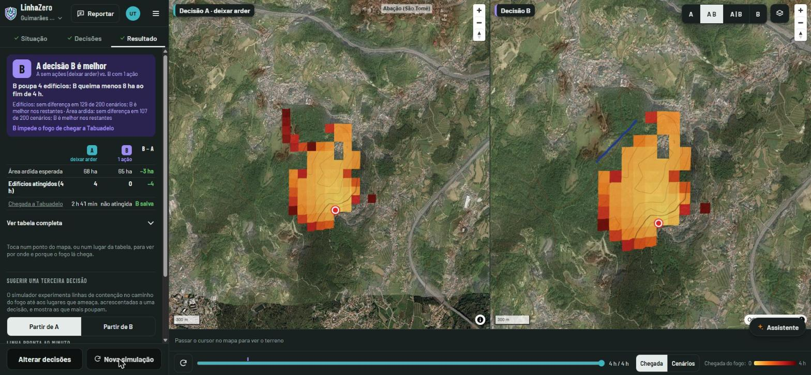
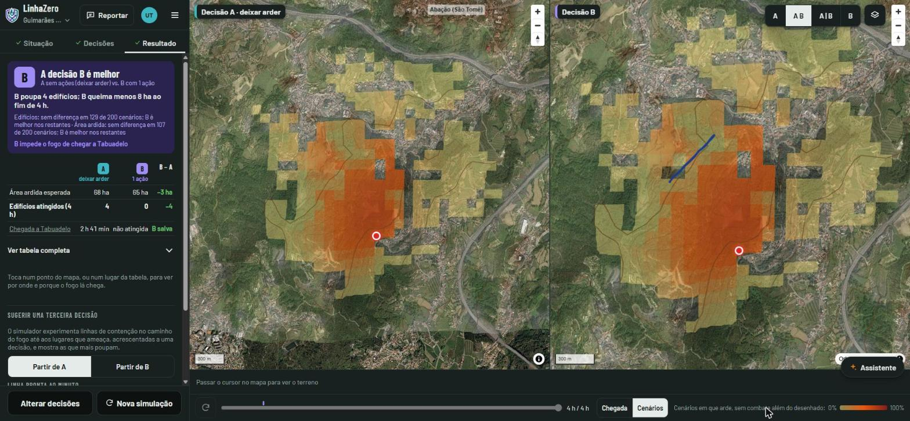
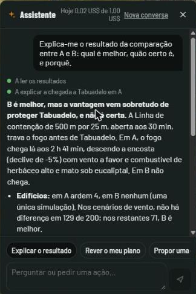
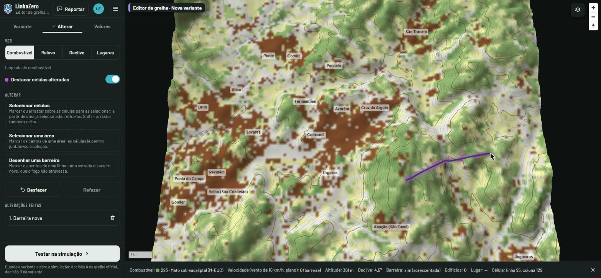

Do primeiro clique à comparação de duas decisões, em cinco minutos.
Para experimentar: abra linhazero.dev e carregue em "Pedir acesso". Se é júri ou mentor do Hack4Guimarães, diga-o no pedido: aprovamos em poucos minutos. Sem conta, o "Cenário de demonstração" abre logo um exemplo, só de leitura (pode simular, não alterar).
Comparar duas decisões
Situação: acender o fogo. Carregue em "Acender o fogo" e toque no mapa. O vento, a temperatura e a humidade do momento chegam sozinhos (IPMA, Open-Meteo); qualquer valor pode ser mudado à mão.
Decisões: desenhar A e B. Em cada mapa, desenhe o que faria: linha de contenção, ataque, proteger zona, descarga aérea ou contrafogo, cada uma com o minuto em que fica pronta. Uma decisão sem ações é "deixar arder".
Simular. As duas decisões correm sobre o mesmo fogo. Com "Considerar a incerteza", cada uma corre 200 a 500 vezes com o vento e o combustível a variar, nos mesmos cenários para A e B.
Resultado: ler a comparação. O painel diz qual decisão é melhor, quantos edifícios e hectares poupa, a que horas o fogo chega a cada aldeia e com que confiança ("B é melhor em 143 de 200 cenários"). A barra de tempo faz avançar o fogo nos dois mapas.

O mesmo fogo nas duas decisões. À direita, uma linha de contenção a norte impede o fogo de chegar a Tabuadelo: B poupa 4 edifícios.
Histórico de simulações
Cada simulação com incerteza fica guardada. No menu ☰, "Histórico de simulações" lista as suas simulações (data, vento, ações de A e B, área ardida, edifícios) e abre qualquer uma tal como foi vista, sem simular de novo; a partir daí pode alterá-la e comparar outra vez.
Perceber o porquê
Tocar num ponto do mapa desenha o caminho que o fogo fez até lá em cada decisão, e diz o que o tornou rápido: o combustível, o vento ou o declive.
"Cenários", ao lado de "Chegada", mostra em quantos dos cenários cada ponto arde.
"Sugerir uma terceira decisão" experimenta linhas de contenção no caminho do fogo e mostra as que mais poupam, prontas a passar para a decisão B.

Vista de cenários: a cor diz em quantos dos 200 cenários cada ponto arde.
O assistente
O botão "Assistente" abre um painel de conversa (é preciso conta). Experimente os atalhos "Explicar o resultado", "Rever o meu plano" e "Propor uma decisão B", ou pergunte:
"Porque é que B ganha?"
"Esta linha aguenta? Que largura precisava?"
"A resposta muda se o vento rodar?"
"Até quando posso esperar para abrir a linha?"
"Põe um ataque na cabeça do fogo na decisão B."
"Faz um resumo para o COS."
A IA explica, a física decide: todos os números vêm do simulador. O que o assistente muda no mapa fica marcado e desfaz-se com "Desfazer".

Prevenção

No Editor de grelha (menu ☰), um município muda o território: pinta combustível, abre uma faixa de gestão de combustível, acrescenta uma barreira. Guarda a variante e carrega em "Testar na simulação": a decisão A corre no território de hoje e a B no território com a faixa, contra o mesmo fogo.
Assim vê-se quanto a faixa teria atrasado ou travado o fogo, antes de gastar dinheiro nela.
LinhaZero · Hack4Guimarães 2035 · linhazero.dev · Mais detalhe: Ficha técnica do simulador e Arquitetura.